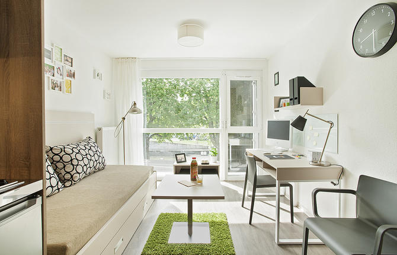
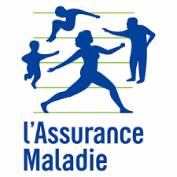

Vous êtes maintenant assuré de suivre vos études à Bourges dès la prochaine rentrée universitaire. Retrouvez ici tout ce qu'il faut faire et prévoir, étape par étape, pour bien préparer votre arrivée à Bourges.
Avant votre arrivée, commencez le plus tôt possible à chercher un logement. Vous pouvez faire
un certain nombre de démarches à distance. Si vous comptez chercher un logement une fois arrivé en
France, pensez à réserver un logement provisoire le temps de trouver un logement définitif.

Documents d'identité :
N'hésitez pas à scanner ou à prendre en photo vos documents et envoyez-les-vous par email ou sauvegardez-les sur un cloud. Vous y aurez ainsi toujours accès facilement. N'oubliez pas de prendre également votre téléphone portable , une carte bancaire de retrait utilisable en France et l'original ou la copie de votre carnet de santé .
Dès votre arrivée, il y a 6 démarches très importantes à accomplir. Vous devez vous en occuper immédiatement.
C’est la 1ère démarche à accomplir avant toutes les autres. Elle est obligatoire pour s’inscrire dans votre établissement d’enseignement supérieur.
La contribution vie étudiante et de campus coûte 95 euros par an. Vous pouvez la payer sur internet en vous connectant au site cvec.etudiant.gouv.fr. Vous pouvez également la payer en espèces auprès d’un bureau de poste.
Consultez l'article du CAMPUS FRANCE sur les 10 choses à savoir sur la CVEC pour mieux comprendre le fonctionnement de la Contribution Vie Etudiante et de Campus (CVEC) et ses implications pour les étudiants.
Présentez-vous au service des relations internationales de votre établissement d’accueil. Profitez-en pour obtenir les renseignements nécessaires à la poursuite de vos études en France. Rendez-vous ensuite au service des inscriptions pour finaliser votre inscription, payer vos frais de scolarité et obtenir votre carte d’étudiant.
Ouvrir un compte bancaire en France peut être très utile, notamment pour régler vos factures (électricité, téléphone, loyer) et vos abonnements (transports, Internet). Vous pourrez également percevoir plus facilement vos éventuels salaires et vous faire rembourser vos frais de santé directement. Une carte de paiement française vous permet également de régler la majorité de vos dépenses et vous évite de transporter des sommes importantes d’argent liquide.
Consultez notre article sur Informations générales des banques à Bourges pour mieux comprendre le fonctionnement des banques et plus facile de choisir une banque pour les étudiants.
Si vous êtes venus en France avec un visa nécessitant une validation , effectuez cette démarche dans les tous premiers jours de votre arrivée. Elle vous permettra ensuite de vous inscrire à la sécurité sociale et de voyager pendant votre séjour.
Connectez-vous ici pour effectuer.
Vous aurez besoin :
Pas d’inquiétude ! Vous pouvez acheter un timbre électronique dans un bureau de tabac, sur une borne dédiée,
et le payer en espèces.
Vous pouvez trouver ici les
bureaux de tabacs à Bourges.
Si vous possédez une Carte Européenne d’Assurance Maladie (CEAM), vous n’avez pas besoin de vous
inscrire
à la sécurité sociale française. Vous pouvez utiliser votre carte et recevoir des soins en
France. Cette
carte se demande dans votre pays d’origine.
Les étudiants concernés sont ceux ayant la nationalité d’un pays de l’Union Européenne, de l’Islande, du
Lichtenstein, de la Norvège ou de la Suisse.
Vous devez vous inscrire au régime général de la sécurité sociale française. L’inscription se fait en ligne en vous connectant au site de l’assurance maladie dédié aux étudiants étrangers Il est disponible en français et en anglais.
L’inscription est gratuite. Elle doit se faire immédiatement après votre inscription dans votre établissement.
Cette démarche est obligatoire. Elle vous permettra de vous faire rembourser une partie de vos frais médicaux. Si vous êtes venus étudier en France avec un visa long séjour valant titre de séjour (VLS-TS), vous obtiendrez une carte vitale qui facilitera vos remboursements. C'est la validation de votre titre de séjour qui vous permettra de l'obtenir.
